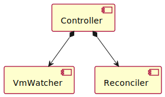

Package org.jdrupes.vmoperator.manager
Class Controller
java.lang.Object
org.jgrapes.core.internal.ComponentVertex
org.jgrapes.core.Component
org.jdrupes.vmoperator.manager.Controller
- All Implemented Interfaces:
Iterable<ComponentType>,Channel,ComponentType,Eligible,Manager
Implements a controller as defined in the
Operator Whitepaper.
The implementation splits the controller in two components. The
VmMonitor and the Reconciler. The former watches
the VM definitions (CRs) and generates VmDefChanged events
when they change. The latter handles the changes and reconciles the
resources in the cluster.
The controller itself supports a single configuration property:
"/Manager":
"/Controller":
namespace: vmop-dev
This may only be set when running the Manager (and thus the Controller) outside a container during development.

-
Nested Class Summary
Nested classes/interfaces inherited from interface org.jgrapes.core.Channel
Channel.Default -
Field Summary
-
Constructor Summary
Constructors -
Method Summary
Modifier and TypeMethodDescriptionvoidConfigure the component.voidonHandlingError(HandlingError event) Special handling ofApiExceptionthrown by handlers.voidonModifyVm(ModifyVm event, VmChannel channel) On modify vm.voidHandle the start event.Methods inherited from class org.jgrapes.core.Component
channel, component, defaultCriterion, isEligibleFor, setNameMethods inherited from class org.jgrapes.core.internal.ComponentVertex
activeEventPipeline, addHandler, attach, channelReplacements, children, componentPath, componentVertex, detach, fire, initComponentsHandlers, iterator, name, newEventPipeline, newEventPipeline, parent, registerAsGenerator, root, toString, unregisterAsGeneratorMethods inherited from class java.lang.Object
clone, equals, finalize, getClass, hashCode, notify, notifyAll, wait, wait, waitMethods inherited from interface java.lang.Iterable
forEach, spliterator
-
Constructor Details
-
Controller
Creates a new instance.
-
-
Method Details
-
onHandlingError
Special handling ofApiExceptionthrown by handlers.- Parameters:
event- the event
-
onConfigurationUpdate
Configure the component.- Parameters:
event- the event
-
onStart
@Handler(priority=100) public void onStart(Start event) throws IOException, io.kubernetes.client.openapi.ApiException Handle the start event.Has higher priority because it configures the default Kubernetes client.
- Parameters:
event- the event- Throws:
IOExceptionio.kubernetes.client.openapi.ApiException
-
onModifyVm
@Handler public void onModifyVm(ModifyVm event, VmChannel channel) throws io.kubernetes.client.openapi.ApiException, IOException On modify vm.- Parameters:
event- the event- Throws:
io.kubernetes.client.openapi.ApiException- the api exceptionIOException- Signals that an I/O exception has occurred.
-